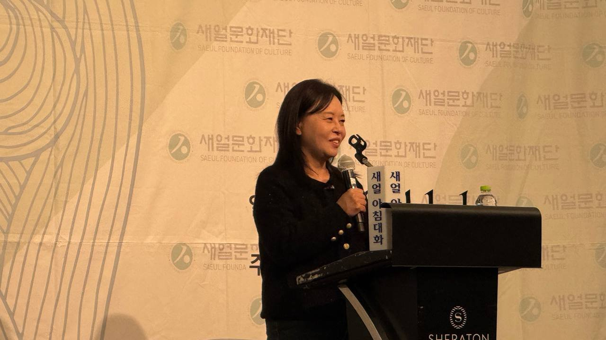

[심층] 얼굴 하나 쫓아 가족까지, 가자 학살의 AI 드론
김영미 분쟁전문 PD, 제473회 새얼아침대화 강연
서안지구 올리브 철 정착민 공격 377건
이스라엘 자원봉사자 「내가 대신 맞아야」
AI경제저널=김갑봉 기자 | 2026년 11월 11일 아침 인천 쉐라톤 그랜드 호텔 연회장이었다. 새얼문화재단이 연 제473회 새얼아침대화 연단에 김영미 분쟁전문 프리랜서 PD가 섰다.
강연 제목은 「종교와 정파를 넘어서는 평화 연대의 현장」이었다. 김 PD는 우크라이나와 팔레스타인 취재를 마치고 막 돌아온 길이었다.
김 PD는 이번 취재 주제가 이스라엘의 감시 체계와 AI 무기였다고 소개했다. 그가 팔레스타인을 처음 취재한 것은 2001년이었다. 강연 한가운데에 가자지구에서 사람을 쫓는 AI 드론이 있었다.
얼굴 하나로 시작하는 추적
김 PD는 이스라엘군의 AI 드론 공격을 차례로 설명했다. 가자지구의 한 사람이 하마스 대원으로 추정되면 그를 죽이라는 명령이 입력된다.
드론은 그 사람의 안면 인식 정보를 지니고 날아간다. 김 PD는 이 정보가 수배 전단의 몽타주와 다르다고 했다.
얼굴 하나에 각도별 모습과 위에서 본 모습까지 수천 가지 정보가 담긴다. 드론은 사람들 얼굴을 하나하나 맞춰 보다가 표적을 찾으면 내려와 터진다.
이어 다른 드론이 날아와 DNA를 거둔다. 표적이 맞는지 확인하는 작업이다. 김 PD는 이스라엘이 이런 AI 무기 체계를 이미 완성했다고 말했다. 그는 개인이 만들 수 없는 기술이라며 정부가 조직적으로 개발했을 것이라고 했다.
감시는 공격보다 먼저 있었다. 김 PD는 이스라엘이 안면 인식으로 팔레스타인 사람 누구든 정보를 날마다 새로 쌓는다고 했다.
국제앰네스티는 2023년 5월 2일 보고서 『자동화된 아파르트헤이트』에서 서안지구 헤브론 검문소의 「레드 울프(Red Wolf)」를 고발했다.
앰네스티에 따르면 이 체계는 팔레스타인 사람 얼굴을 본인 모르게 찍어 생체 정보와 맞춘다. 기록이 없는 사람은 검문소를 지나지 못할 수 있다.
「아빠 어디니」, 가족과 함께 있을 때
김 PD는 요즘 드론이 더 무서워졌다고 했다. 표적을 찾아도 가족과 함께 있을 때까지 따라간다는 것이다. 그는 이 프로그램 이름이 「웨어스 대디(Where's Daddy)」라며 "가족들까지 같이 죽여버리는 거예요"라고 말했다.
국제 인권단체 휴먼라이츠워치(HRW)는 2024년 9월 10일 문답 자료에서 이 도구를 다뤘다. HRW에 따르면 이 도구는 휴대전화 위치로 표적을 쫓는다.
표적이 흔히 가족이 사는 집에 들어서면 이스라엘군 운용자에게 알린다. HRW는 휴대전화 위치 정보가 이를 확정할 만큼 정확하지 않다고 지적했다.
같은 자료는 가자 주민마다 무장대원 연관 점수를 매기는 「라벤더(Lavender)」도 다뤘다. HRW는 그 결과를 따지지 않고 공격에 쓰면 전쟁범죄가 될 수 있다고 밝혔다.
스톡홀름국제평화연구소(SIPRI)도 같은 위험을 짚었다. 로라 브룬과 마르타 보는 2025년 8월 보고서에서 AI 추천을 지나치게 믿는 「자동화 편향」을 경고했다.
보고서는 AI가 쏟아내는 표적의 속도와 규모 앞에서 사람의 검증이 형식에 그칠 수 있다고 분석했다.
드론 공격은 지금도 이어진다. 신화통신은 8월 3일 마흐무드 바살 가자지구 민방위대 대변인의 영상 성명을 전했다.
바살 대변인은 이스라엘군 드론이 2일 가자지구 여러 곳을 공격해 여성 2명과 어린이 4명을 포함해 적어도 18명이 숨졌다고 밝혔다. 그는 공격 목표에 주거용 아파트와 피란민 텐트, 민간 차량이 있었다고 말했다.

올리브 철 서안지구 정착민 공격 377건
김 PD가 찾은 서안지구는 올리브 수확 철이었다. 그는 올리브가 팔레스타인 사람이 현금을 만질 수 있는 유일한 산업이라고 했다.
정착민은 농장마다 와서 올리브를 털어 간다. 팔레스타인 사람은 털리지 않으려고 버틴다. 김 PD는 정착민이 밤마다 팔레스타인 집에 들어가 부수고 사람을 죽인다고 전했다.
그가 인터뷰한 정착민은 하나님이 당신을 선택한 증거가 무엇이냐는 물음에 "그걸 말로 해야 되냐, 나를 봐라"라고 답했다.
유엔 집계도 김 PD의 증언과 겹친다. 스테판 뒤자릭 유엔 대변인은 11월 초 브리핑에서 9월 올리브 철이 시작된 뒤 정착민 공격이 377건이라고 밝혔다.
200명 넘게 다쳤고 올리브 나무 3850그루 넘게 부서졌다. 유엔 인도지원조정국(OCHA)은 2006년 집계를 시작한 뒤 올리브 철 가운데 가장 많다고 했다.
김 PD는 지난주부터 예리코(여리고)에서도 정착민이 총을 들고 팔레스타인 집에 들어간다고 했다.
팔레스타인 일간 알쿠드스에 따르면 예리코 서쪽 알두유크 알타흐타 마을에서 정착민이 집 8채를 한꺼번에 차지했다. 주민 수십 명이 총구에 밀려 집을 떠났다.
대신 맞는 이스라엘 시민
김 PD는 절망 속에서 이스라엘 시민을 봤다. 그는 서안지구 올리브 농장에서 20대 중반의 이스라엘 자원봉사자를 만났다.
이 자원봉사자는 팔레스타인 가정에 머물며 정착민이 쳐들어오면 맨 앞에 선다. 히브리어와 아랍어를 더듬더듬 배워 가며 함께 밥을 먹는다.
자원봉사자는 팔레스타인 사람이 맞으면 그 땅에서 처벌받지 않는다고 했다. 이스라엘 시민권자인 자신이 맞으면 폭행죄로 사법 처리를 할 수 있다는 것이다.
그래서 "내가 대신 맞아야 된다"고 했다고 김 PD는 전했다. 그는 이 자원봉사자가 유대교의 자비를 따른다고 말했다고 덧붙였다.
김 PD는 여러 종교를 취재하며 모든 종교가 자비를 최고 가치로 둔다는 것을 알게 됐다고 했다. 그는 같은 가치를 믿으면서 싸우는 까닭을 땅과 돈에서 찾았다.
김 PD는 이스라엘 인권단체 브첼렘(B'Tselem)의 보고서가 팔레스타인 상황을 세계에 알린다고 소개했다. 매주 토요일 텔아비브 광장에서는 인질 가족들이 전쟁을 멈추라는 시위를 이끈다.
김 PD는 인질 가족들이 「다른 아이」를 더는 죽일 수 없다고 말한다고 전했다. 그들은 「팔레스타인 아이」라는 말 대신 「다른 아이」라고 불렀다.
과반 잃은 네타냐후와 베들레헴의 학생들
김 PD는 "이 문제를 해결하는 데 있어서는 이스라엘 시민을 응원해야겠구나라는 생각을 했습니다"라고 말했다. 그는 그 결과가 이번 총선에 나타났다고 했다. 김 PD는 예전에는 정부 위주로 취재했지만 지금은 시민이 바뀌고 있다고 말했다. 그는 그 시민 옆에 진정한 성직자들이 있다고 했다.
10월 27일 이스라엘 총선에서 베냐민 네타냐후 총리 진영은 크네세트 120석 가운데 53석을 얻었다. 과반 61석에 못 미쳤다.
가디 아이젠코트가 이끄는 야권은 48석, 아랍계 정당은 19석이었다. 이츠하크 헤르초그 대통령은 11월 8일 아이젠코트에게 정부 구성권을 줬다.
시한은 12월 6일이다. 미국 중동 전문매체 알모니터는 아랍계 정당이 아이젠코트의 우군이 될 수 있지만 아직 합의는 없다고 전했다.
김 PD는 베들레헴대학교 학생들이 졸업해도 일자리가 없어 어두운 얼굴로 학교에 다닌다고 전했다. 그는 공부하면 기회가 온다고 말해 줄 어른을 그들이 기다린다고 했다. 강연의 마지막 말은 이랬다.
"그런 마음이 종교와 정파를 넘어서서 연대를 가져오고 평화로운 세상을 만들 수 있다고 생각합니다."
참고문헌
- SIPRI(Laura Bruun·Marta Bo), 「Bias in Military Artificial Intelligence and Compliance with International Humanitarian Law」, 2025.8, https://sipri.org/publications/2025/other-publications/bias-military-artificial-intelligence-and-compliance-international-humanitarian-law
- Human Rights Watch, 「Questions and Answers: Israeli Military's Use of Digital Tools in Gaza」, 2024.9.10, https://www.hrw.org/news/2024/09/10/questions-and-answers-israeli-militarys-use-of-digital-tools-in-gaza
- Amnesty International, 「Israel/OPT: Israeli authorities are using facial recognition technology to entrench apartheid」, 2023.5.2, https://www.amnesty.org/en/latest/news/2023/05/israel-opt-israeli-authorities-are-using-facial-recognition-technology-to-entrench-apartheid/
- 신화통신, 「이스라엘군, 가자지구 잇단 공습...어린이 포함 수십 명 사망」, 2026.8.3, 신화통신 한국어 서비스(협약)
- Al Quds, 알두유크 알타흐타 정착민 주택 점거와 유엔 대변인 발언 보도, 2026.11.6, https://alquds.com/en/posts/270175
- Democrata(유엔 대변인 브리핑 OCHA 집계 전재), 「The UN denounces a historic high of attacks by Israeli settlers in the West Bank during the olive campaign」, 2026.11.6, https://www.democrata.es/en/international/the-un-denounces-a-historic-high-of-attacks-by-israeli-settlers-in-the-west-bank-during-the-olive-campaign/
- Al Jazeera, 「Israel's president tasks Eisenkot to form new coalition government」, 2026.11.8, https://aljazeera.com/news/2026/11/8/israels-president-tasks-eisenkot-to-form-new-coalition-government
- Al-Monitor, 「Israel's parliament sworn in, Eisenkot tries to forge government」, 2026.11.10, https://www.al-monitor.com/originals/2026/11/israels-parliament-sworn-eisenkot-tries-forge-government
[사진 출처]
- [사진1] 신화통신(협약) 「이스라엘군, 가자지구 잇단 공습...어린이 포함 수십 명 사망」(2026.8.3) [사진2] 김갑봉
관련기사
- [심층] 집문서 들고 나온 마리우폴 피란민, 우크라이나 「부동산 전쟁」
- 나토 병력 1997년 수준 요구한 크렘린, 선전 첫 미·중·러 정상회동 준비
- 민주당 상원 54석에도 '재의결 3분의 2' 벽
- 러·우 종전협상 재개, 러 '대륙 안보'·우 '즉각 휴전'
저작권자 © AI경제저널 무단전재 및 재배포, AI학습 및 활용 금지